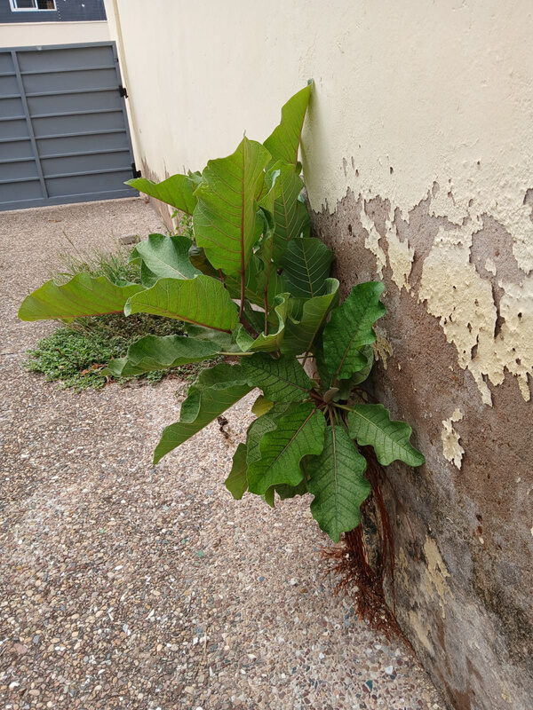

An Ɛdan research affiliate is someone who chooses to base part of their practice within the space. It is a light, flexible affiliation for those who want to work alongside others while remaining independent in their projects and commitments.
Affiliates make a subsidised contribution of 800 GHS per month, or an agreed weekly rate, to use the workspace and shared facilities — including the studio labs and café & co-working space. This contribution sustains Ɛdan's wider purpose of keeping creative space accessible and community-led.
Affiliates work on their own ideas and research while committing to the core values of the space: respect, peace and experimentation. Each month we host a social gathering to encourage exchange and connection.
It offers space, community and shared intention. A light structure, but a serious commitment to shaping the city with care.

Access to the shared workspace and its facilities from 8am – 5pm, Monday to Friday. A place to base your projects, research or practice within a women-led, community-grounded creative space. Access to our monthly social. Opportunity to propose events, workshops or small city-focused interventions. Invitations into collaborative projects where there is alignment. 10% off Small Moments and Ɛdan residencies.
Sign UpSame advantages as monthly, with a reduced membership rate.
Sign Up